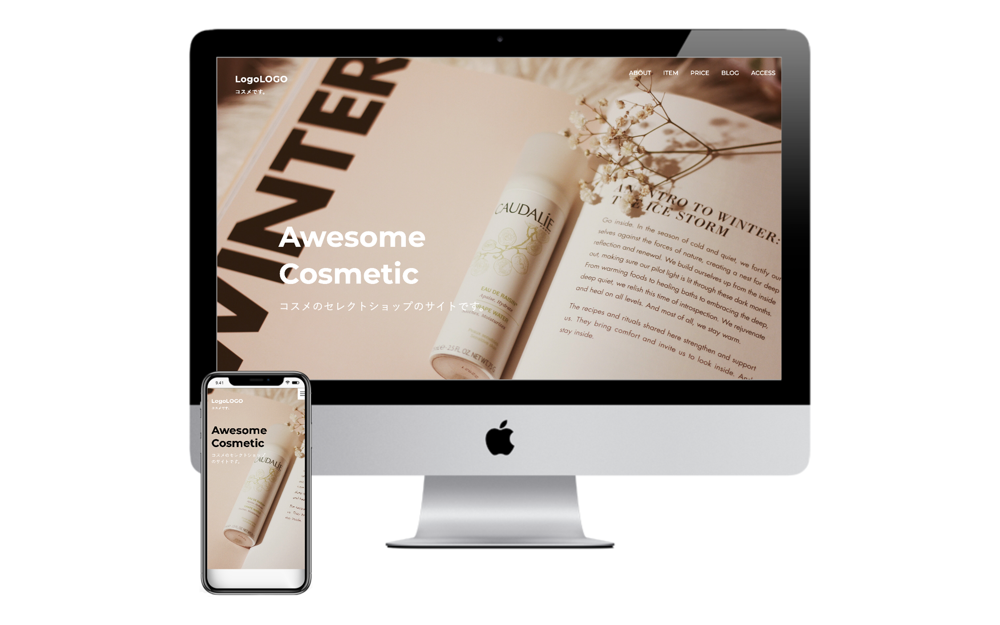
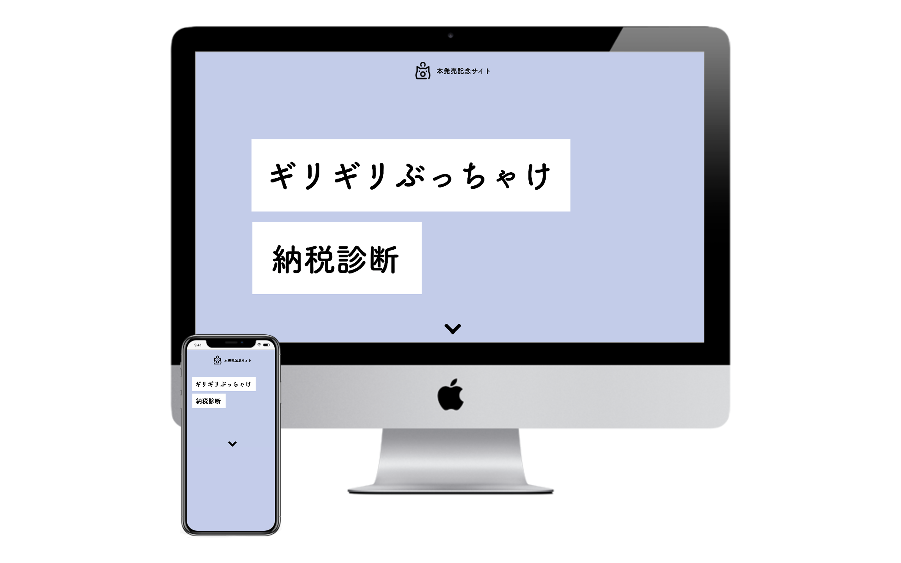
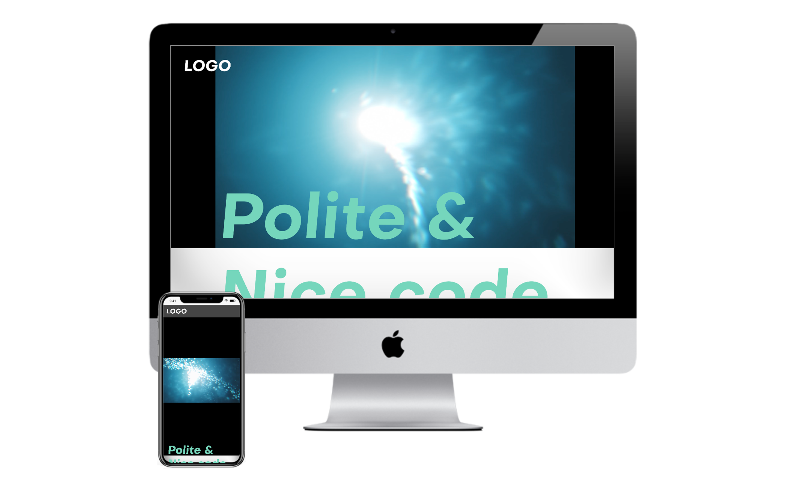
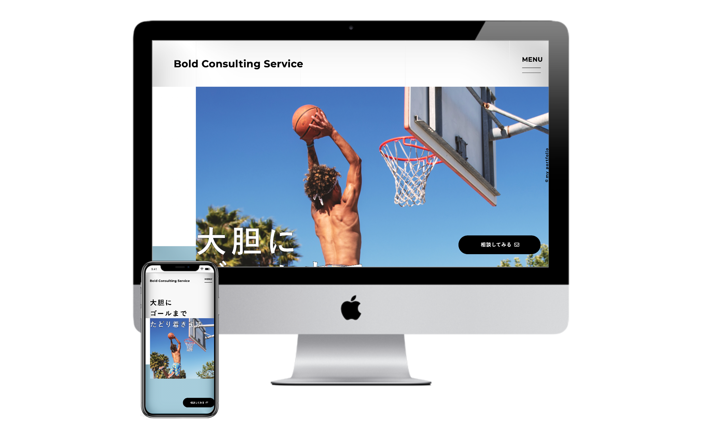
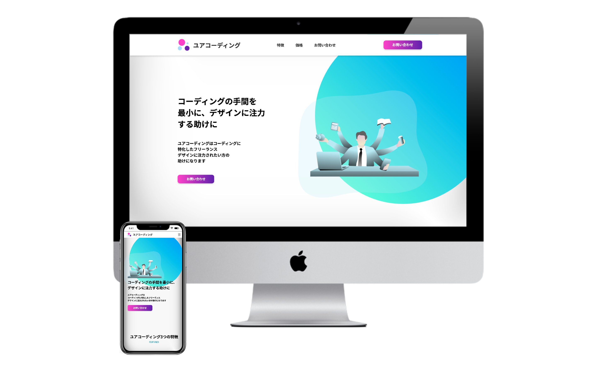

WORKS
主な制作実績をご紹介します。
（注意：全て架空サイトです）
-

Awesome Cosmetic
- 内容
- コーディング
- 言語
- HTML, CSS, JavaScript
- 制作時間
- 9時間（2020年8月）
デザインカンプからのコーディング。
架空コスメセレクトショップのWebサイトです。
Drawer.jsを用いてドロワーメニューを実装しました。デザインが複雑でない分、情報の並列やブログ投稿の日時などに対して、適切なHTMLタグを意識してコーディングしました。 -

本発売記念サイト
- 内容
- コーディング
- 言語
- HTML, CSS, JavaScript
- 制作時間
- 8時間（2020年9月）
デザインカンプからのコーディング。
架空の本発売記念サイトです。
リキッドデザインを意識してコーディングしました。疑似要素を用い、HTMLの可読性向上を心がけました。 -

ポートフォリオ（練習）
- 内容
- コーディング
- 言語
- HTML, CSS, JavaScript
- 制作時間
- 15時間（2020年10月）
デザインカンプからのコーディング（スマホ表示はデザイン含む）。
練習用のポートフォリオサイトです。
スクロールするたびに各セクションをフェードインさせています。slick.jsを用い、スライダーを実装しました。 -

洗濯theNIPPON株式会社
- 内容
- コーディング
- 言語
- HTML, CSS, JavaScript
- 制作時間
- 20時間（2020年11月）
デザインカンプからのコーディング。
架空コンサルティング企業のWebサイトです。
CSSアニメーションを用い、文字を繰り返しのカルーセル表示にしました。jQueryをコーディングし、アコーディオンメニューを作成しました。斜め背景やネガティブマージンのコーディングに対応しました。 -

株式会社ユアコーディング
- 内容
- コーディング
- 言語
- HTML, CSS, JavaScript
- 制作時間
- 20時間（2020年12月）
デザインカンプからのコーディング（スマホ表示はデザイン含む）。
架空Web制作企業のWebサイトです。
コンテンツ全体のフェードインにAOS.jsを、制作実績一覧にSwiper.jsを実装しました。お問合せフォームはGoogleフォームと紐付けました。 -
藤岡行政書士事務所
- 内容
- コーディング, WordPress実装
- 言語
- HTML, CSS, JavaScript, WordPress
- 制作時間
- 30時間（2020年1月）
デザインカンプからのコーディング（スマホ表示はデザイン含む）およびWordPress実装。
架空行政書士事務所のWebサイトです。
複数ページのため、ファイル管理やCSS設計（BEM）を意識しました。